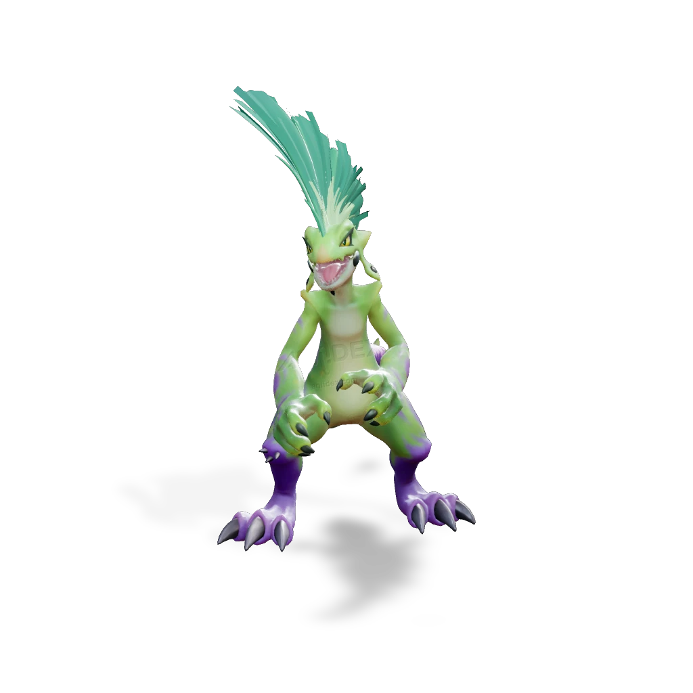

รายชื่อ Aniimo › #037

กิ้งก่าโมฮอว์ก (Pomawk)
#037ธาตุพืชNovaBreakTier C
แผงคอสูงตระหง่านแสดงถึงความดุร้าย เสียงคำรามเผยตัวตนที่แท้จริง หางถูกสร้างมาเพื่อกักเก็บคลื่นเสียง และปล่อยคลื่นเสียงระเบิดเมื่อโจมตีคู่ต่อสู้
ดูรายละเอียดเต็ม ร่างพิเศษ และร่างเปล่งประกายค่าสถานะพื้นฐาน
| HP | 87 |
|---|---|
| ATK | 90 |
| P.DEF | 80 |
| M.DEF | 76 |
| REGEN | 100 |
| BREAK | 107 |
สกิล
| โจมตีปกติ | ATK พืช (BREAK) ใช้พลังพืชโจมตีเป้าหมายระยะประชิด |
| สกิล 1 | Rhythm Combo พืช คอมโบตามจังหวะใส่เป้าหมาย ใช้ติดต่อกันได้สูงสุด 3 ครั้ง ถ้ากดถูกจังหวะจะได้ [Volume] เพิ่ม 1 สแต็ก |
| สกิล 2 | Jittering Beats พืช ฟาดเป้าหมายรอบตัว เป้าหมายที่โดนติด [Silence] 4 วินาที |
| สกิล 3 | Wild Show พืช กดค้างเพื่อชาร์จไมโครโฟน แล้วปล่อยคลื่นเสียงขนาดใหญ่ ทำดาเมจเป้าหมายด้านหน้า ถ้าปล่อยถูกจังหวะทำดาเมจ BREAK เพิ่ม 30% |
| อัลติเมต | Sonic Boom พืช ปล่อยคลื่นเสียงระเบิดรอบตัว และเติม [Volume] เต็มทันที |
สายวิวัฒนาการ
- กิ้งก่าเปลือกไข่ → กิ้งก่าโมฮอว์ก (Aniimo เลเวล 25)
จุดเกิด
- Rosetower Woods Lv. 43–50
Held Item ที่แนะนำ
- Gargantuan Horn Aniimo ที่สวมใส่ได้ BREAK เพิ่ม 0.7 ต่อเลเวล
งานใน Homeland
งานธาตุพืช Lv.3, งานช่าง Lv.3